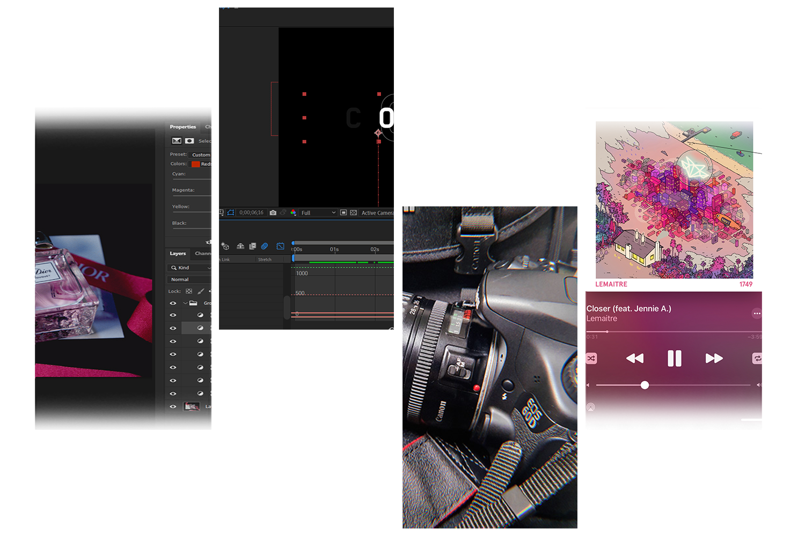

FAV
My favorite,
things make Happy
다양한 취미활동을 통해 많은 경험을 하고 있습니다.
아래로 드래그하여 취미에 대해 자세히 알아보세요.

#1. Photography
카메라로 다양한 구도의 사진을 찍는것을 좋아합니다.
#2. Design & Edit
여러가지 디자인을 만들어보거나 보정하는것을 좋아합니다.
더 자세히 알고싶다면?
#3. Video Edit
에펙 및 프리미어를 사용하여 간단한 영상 편집을 합니다.
#4. Listening Music
다양한 종류의 음악을 감상하는 것을 좋아합니다.